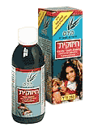

Микстура, содержащая эхинацею, прополис и витамин C, может быть предложена в качестве эффективного средства профилактики инфекций дыхательных путей у детей.
Инфекции верхних дыхательных путей (ВДП) очень часто встречаются в детском возрасте. Снижение как числа случаев инфекции, так и тяжести и длительности отдельных эпизодов, имеет важное экономическое и социальное значение.

Микстура «Chizukit», содержащая эхинацею (50 мг/мл), прополис (50 мг/мл) и витамин C (10 мг/мл) была предложена в качестве средства профилактики инфекций дыхательных путей у детей. Считается, что эхинацея обладает цитокиномодулирующим эффектом, стимулирует активность макрофагов и естественных киллеров (т.н. NK-клетки). Прополис обладает антимикробной активностью, антионкогенным и общим противовоспалительным эффектом, а также слабым противовирусным действием (оказывает влияние на вирус простого герпеса 1 типа и вирус гриппа). Витамин С повышает пролиферацию Т-лимфоцитов in vitro, индуцирует выработку клетками интерферона и, по-видимому, играет определённую роль в функционировании клеток иммунной системы.
В рандомизированном двойном слепом плацебо-контролируемом исследовании приняли участие 430 детей в возрасте от 1 до 5 лет, из них 215 получали растительную микстуру и 215 - плацебо в течение 12 недель. Пациенты в обеих группах принимали препарат 2 раза в день в дозе по 5 мл (1-3 года) или 7,5 мл (4-5 лет). Во время острого респираторного заболевания доза препарата увеличивалась в 2 раза.
Полный курс терапии прошли 328 пациентов, из них 160 (средний возраст - 38,3±18,6 месяцев) получали растительную микстуру, 168 (средний возраст - 38,9±20,6 месяцев) - плацебо. В первой группе наблюдалось значительное снижение общего числа эпизодов инфекции по сравнению с группой плацебо (138 vs 308, снижение на 55%), снижение среднего числа эпизодов инфекции у одного ребёнка (0,9±1,1 vs 1,8±1,3; снижение на 50%, р<0,001), также как и числа дней, сопровождавшихся повышением температуры (2,1±2,9 vs 5,4±4,4; снижение на 62%, р<0,001). Кроме того, у пациентов, получавших растительную микстуру, значительно снизилась общая длительность заболевания (средняя длительность 2,6±4,2 дня vs 6,2±5,0 дней; р<0,001) и длительность отдельных эпизодов инфекции (1,6±1,9 дней vs 2,9±1,6 дней; р<0,001).
Нежелательные лекарственные реакции наблюдались редко и были лёгкими по степени тяжести. Значимых различий по частоте их возникновения в обеих группах не выявлено (р=0,54).
Таким образом, растительная микстура, содержащая эхинацею, прополис и витамин С, показала высокую эффективность в профилактике инфекций дыхательных путей у детей. Тем не менее, необходимо проведение дальнейших исследований на больших группах пациентов с целью подтверждения полученных данных, выявления потенциальных нежелательных лекарственных реакций и групп риска их развития, таких как дети с аллергическими или соматическим заболеваниями, получающие сопутствующую терапию, прежде чем средство будет рекомендовано для широкого применения.
Cohen H.A., Varsano I., Kahan E., Sarrell E.M., Uziel Y.
Effectiveness of an herbal preparation containing echinacea, propolis, and vitamin C in preventing respiratory tract infections in children: a randomized, double-blind, placebo-controlled, multicenter study.
Arch Pediatr Adolesc Med 2004; 158:217-21.